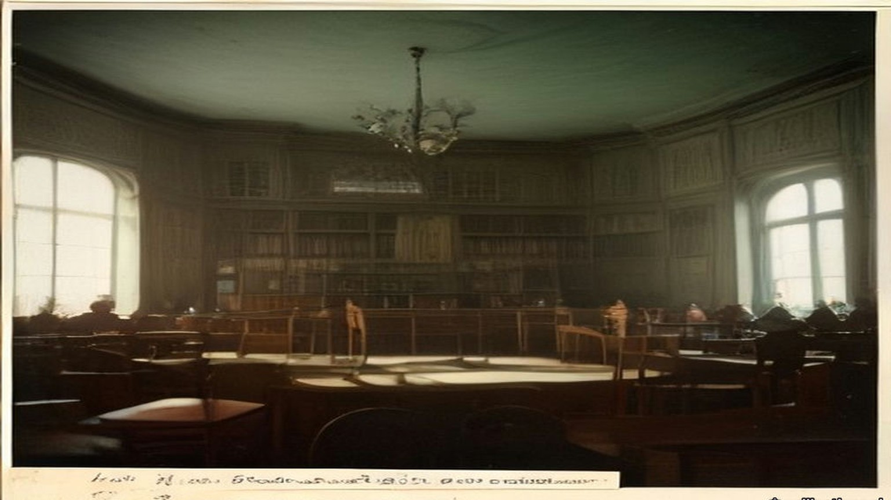
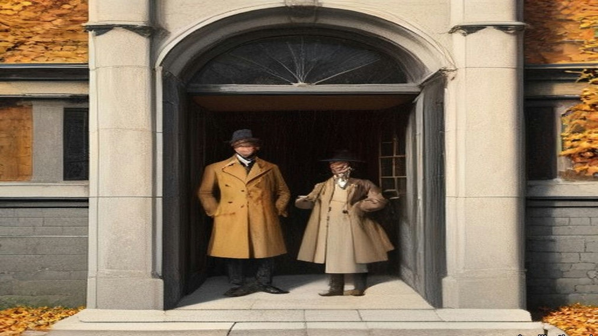
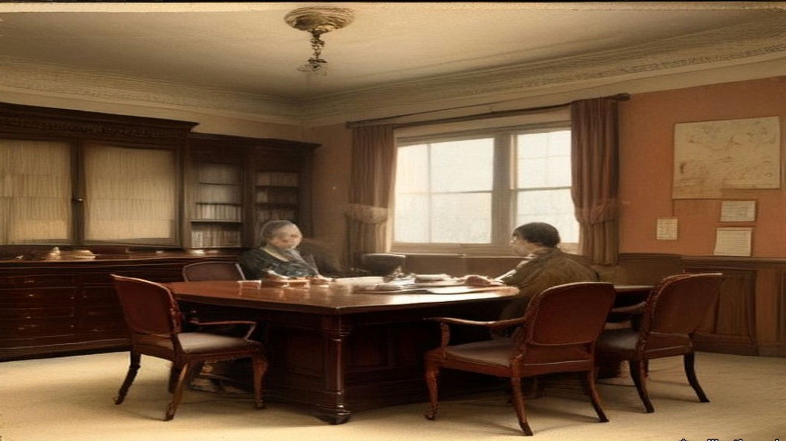
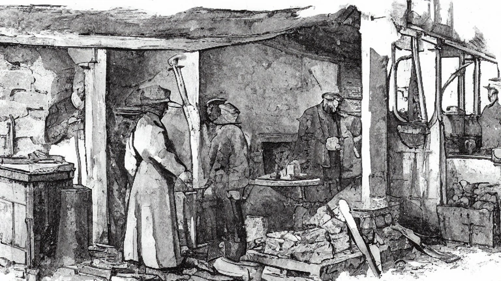

Chapter 14
Big Bugs about Athy, 1903–1909
Westminster, Athy, Maynooth, Castledermot and Dublin, 1903 to 1909
On Wednesday, 25 March 1903, George Wyndham, Chief Secretary for Ireland, rose in the House of Commons to ask leave to bring in an Irish Land Bill. He began by throwing himself on the indulgence of the House. The subject was technical to a degree almost beyond belief, he said, and he was trying to speak to two audiences at once: a small one that knew every detail, and a large one that had given the details a very wide berth.
Then he gave them the details. The State would lend Irish tenants the price of their farms. The tenant would pay it back by an annual instalment, which the Government had lowered from £4 to practically £3 5s. on every £100, with £2 15s. of it for interest and ten shillings for a sinking fund. The money would be raised in a new stock paying two and three-quarters per cent. To sell all the saleable land in Ireland, he estimated, would take no more than £100,000,000. On top of the credit there would be cash, a grant of £12,000,000 from the British Exchequer to be paid out to the landlords who sold.
Wyndham said the Government thought cash aid necessary, but subsidiary. They attached more importance to the credit than to the cash.
Late in the debate, answering the Leader of the Opposition, he explained how the £12,000,000 would be shared out. "We might have said we will add 10 or 12 per cent. in every case; but we did not say so because, in our opinion, it would press more heavily on the small than on the large properties. We have said we will give 15 per cent. on £5,000 and under, and graduate it inversely when we come to estates of greater value. When we get to £20,000, an estate worth £800 a year, we add 10 per cent., and at £40,000 we give 5 per cent."
The Irish Land Act received the royal assent on 14 August 1903. Section 48 gave the Land Commission power to pay the vendor of each estate "a sum calculated at the rate of twelve per cent. on the amount of the purchase money advanced." The rate was the same for every estate, large or small. Section 45 fixed the tenant's annuity at three pounds five shillings for every hundred pounds advanced. The Commission could lend up to seven thousand pounds to one purchaser.

* * *
Athy, county Kildare, Tuesday, 15 September 1903
The circular came to most of the tenants on the Monday. The meeting it called was on the Tuesday. Some tenants never got one at all.
The estate was the Duke of Leinster's, about 45,000 acres, most of it in county Kildare around Maynooth in the north and Athy, Kilkea and Castledermot in the south. The Duke was Maurice FitzGerald, the sixth of the title. He was sixteen, and would come of age on 1 March 1908. The estate was in the hands of two trustees, his uncle Lord Frederick FitzGerald and Lord Kinnaird. That same Tuesday they told the tenants they were willing "to sell the different Leinster estates at 26 years' purchase subject to a reduction of 12½ per cent on first term rents with a view to adjusting them to the second term standard." Twenty-six years' purchase meant a price of twenty-six times the year's rent.
Matthew Minch took the chair in Athy. He held 248 acres from the Duke, and he was a maltster. Five years before, when the Leinster Leader went round the industries of Athy, it had called him Mr. M. J. Minch, M.P., and counted his maltings among the important industries of the town. They kept about fifty men in constant employment throughout the year. The member for South Kildare now was Denis Kilbride.
He told the meeting plainly who was in the room. "Of course, our meeting here today does not comprise all the Leinster tenants, inasmuch as the time was short and circulars were only sent out to those whose names we could secure at very short notice."
They talked a long time about price. They settled on an offer of not more than twenty-four years' purchase of the second-term rents. Some in the room thought even that too much. J. B. Deegan, vice-chairman of the Athy Urban District Council, said they would be "erring on the side of generosity on offering 24 years' purchase," and that the meeting would be "unfavourably criticised by the majority of the tenants in Ireland in consequence of their generosity!"
A committee was named to meet the trustees: Minch, R. Anderson, T. Anderson, J. Gannon, R. Wright, P. Barrington, C. Greene and E. Heydon, with A. Reeves and A. K. Pennycook as secretaries. Robert Anderson and Anthony Reeves were names the Leinster Leader had printed before, in 1898, as a director and as the courteous secretary of the Athy brickworks on the Monasterevan road. Forty men worked there all the year round, for ten shillings to twenty shillings a week.
* * *
Dublin, Thursday, 17 September 1903
The committee went up to Dublin two days later and saw the agent of the estate, Charles R. Hamilton. Stephen J. Browne, solicitor, chairman of Kildare County Council, came for the Maynooth tenants and sat through it without taking part.
Hamilton gave them the trustees' answer. They "had made up their minds, after consultation with their London solicitors, not to sell under 26 years' purchase, inasmuch as, being trustees, they had no power to reduce the income of the present duke."
Afterwards Minch said it was unreasonable and unjust to ask every tenant to pay the same standard price, whatever his land and his circumstances. Twenty-four years was the most the tenants could give.
A correspondent of the Freeman's Journal heard other talk on the estate. The sale, people were saying, was "run by the big men and Scotchmen who have got the fat of the land," men with "heaps of money, made in business, and others who have splendid situations." A tenant who signed himself Nemo said what he meant by the Scotchmen. They were the descendants of men "who in the old days were fondled by Hamilton and his master, the then duke of Leinster, and who got their farms at a figure never dreamt of by Irish men."
* * *
The Town Hall, Maynooth, Monday, 21 September 1903
There were something like seventy tenants on the Maynooth Manor, and the net rental of that part of the estate was said to be well over £9,000 a year. The Nationalist and Leinster Times described the land as mostly grazing, "held by some of the leading graziers of Kildare and Meath. There are, however, some portions of the lands under tillage, and this, needless to say, is of the poorer quality, and is let in comparatively small farms."
About fifty of the tenants were there or represented when the meeting assembled shortly after two o'clock. The Leinster Leader's reporter took down the names: the Rev. Mr. Creed, Laurence Ball, J.P., Mr. Shaw, R. McKenna, J.P. and county councillor, Mark Travers, Philip Brady, two McGraths, Patterson, Langan, Captain Murray, T. Byrne, the Mooneys, the Dunnes. Stephen Browne was there again as solicitor for some of them.
Someone proposed Laurence Ball for the chair. Ball demurred, and Shaw took it. The first question, Shaw said, was whether the Press should be represented at all. Ball said the trustees were consulting in private, and the tenants should consult in private too. The meeting agreed. The reporter closed his notebook and went out.
He waited an hour and a half. When the door opened, Ball and Shaw told him what had been decided: a deputation would go to Athy the next day, made up of Shaw, Ball, Langan, Travers, McGrath, Patterson and McKenna, with Mr. Browne. The paper reported that Browne had brought word from the trustees. They would now take twenty-five years' purchase.
The Nationalist and Leinster Times put it more shortly. "The grazier element predominated and took charge of the meeting."

* * *
Athy, Tuesday, 22 September 1903
The general meeting of the whole estate was held in Athy the next day, and the Maynooth men came down for it. The Castledermot tenants did not.
Edward Heydon, county councillor, explained why. They had asked him "to call a meeting for next Sunday for them to consider their own position and I asked them why not come forward on today as there was a meeting in Athy. They told me that the Athy land was not at all on equal grounds." He asked the meeting not to make terms for them.
Then he said it was a serious thing to come to an arrangement with only one tenth of the tenants present. The chairman answered that this was a public meeting. If the tenants came, they would only be too pleased to have them.
J. B. Deegan wanted to know who the committee spoke for.
"By whom was the committee formed, by the tenants?"
"There was a committee appointed on this day week to interview the trustees. You were present yourself."
Deegan asked whether any committee had been formed by the majority of the agricultural tenants on the Leinster estate, for the purpose of making terms on their behalf.
"You have all the information I have."
"Then there has been no committee formed."
"Well it is a matter for our own opinion, I suppose. There was a committee appointed."
Deegan asked whether the member for the district had been asked to attend. The chairman was not aware that he had. Would it not have been well if he had been, Deegan said. Did they not think he was a fit and proper person to be there? Minch said he would only be too pleased if Mr. Kilbride were there.
Heydon spoke for the smaller men. "Twenty-five years' purchase is frightening everybody," he said. The meeting ought to consider it "from the farmers' point of view alone, from the point of view of people with 60 and 50 and 30 acres of land."
The sporting rights took longer than anything. The trustees wanted the shooting kept for the Duke. Some said the rights should go to the Land Commission, some to the tenants, some to the county council. Minch read a resolution: "They didn't object to the sporting rights being retained by the duke of Leinster for his own personal use and that of his family and friends, but they strongly objected to those rights being let out for profit."
In the end they appointed a deputation with power to make terms.
* * *
Dublin, Thursday, 24 September 1903
Lord Frederick FitzGerald received "a joint deputation representing the tenantry of Maynooth and of the Manor of Athy" in Dublin on the Thursday. The Irish Times said the meeting lasted between half an hour and an hour. The press was not admitted. Afterwards it was given the terms.
"1) 25 years purchase. 2) All arrears up to March 1903, to be added to the purchase money. 3) The gale due on September 29th and November 1st to be forgiven. 4) Payment of interest on the purchase money to commence from 29th September, 1903. 5) Sporting rights reserved to the duke."
The shooting was to stay with the Duke until he came of age.
Edward Heydon and Richard Wright had asked for one more thing. They "did their best to get the trustees to forgive all arrears on tillage farms under £50, and they explained that people on these farms were generally harder set, particularly about Castledermot, where the land was colder. They failed to get the trustees to agree to that."
The Return of Advances that Parliament printed in 1907 shows what the men in the room held from the Duke. Richard McKenna of Maynooth, J.P. and county councillor, had 308 acres. James Patterson had 203, William Chamberlain 207, Laurence Ball, J.P., 186, Mark Travers 119, Joseph Langan 46. Thomas Shaw and Stephen Browne held no land on the estate. From Athy and Kilkea, Richard Wright, J.P., had 347 acres at Kilkea and 39 at Castledermot. Edward Heydon had 317 at Kilkea and 59 at Castledermot. Thomas Anderson, J.P., had 313, Robert Anderson 278, John Gannon, J.P., 257, Matthew Minch, J.P., 248, Andrew Pennycook 223, Philip Barrington 201, Charles Greene 149 and Anthony Reeves 80. The eighteen men held about 3,580 acres between them.
The Leinster Leader reported the terms "as accepted by practically the whole of the Leinster tenantry."

* * *
Castledermot, county Kildare, Sunday, 27 September 1903
The Castledermot tenants met for the first time on the Sunday. The terms had been settled for three days.
The parish priest, the Rev. M. Walsh, took the chair. Edward Heydon told them what had been agreed in Dublin. Nobody in Castledermot had chosen him to go. He told them about the arrears on the small farms, and how the trustees had refused. He spoke of the late Duke.
"He always gave the tenants better terms than other landlords."
"Hear, hear."
A voice said, "He was a good man."
Another voice said, "Better than the government will be."
John Keogh said it out. "It's all very well for the big bugs about Athy to give twenty-five years' purchase, but it's different with us."
John Nolan raised the shooting. There was "some objection to the game rights being given up. We don't want to have gamekeepers coming in on our farms when we have purchased. I would not object to the duke or any of his friends coming on my land to shoot, but I would object to outsiders."
There was the drainage too. The River Lerr ran through the Kilkea and Castledermot lands, and the Board of Works was still owed £14,121 16s. 1d. for draining it, at £363 8s. 9d. every half year. The Duke had always paid it. Heydon said the Duke would go on paying for the maintenance of the Lerr drainage, by investing a sum or mortgaging a piece of property.
A voice said, "We are not paying for it."
They put the motion to accept the terms of the Maynooth and Athy deputations. It was carried with three dissentients.
* * *
A holding near the Lerr, the same day
I never got the paper. A neighbour got one, the Monday, and read it out to a few of us at his gate, and by the time he had it read the meeting in Athy was the next morning. Who'd be going to Athy on a Tuesday, and the oats still out in the stooks? And what would we be doing there, among the Athy men, and it their land and not ours they'd be pricing?
So it was the Sunday, and Father Walsh in the chair.
I stood at the back by the wall. I could smell the wet off the coats, and the pipe smoke, and the cows on the boots of the men either side of me. Heydon was standing up, and he telling us what the big men did in Dublin on the Thursday. I couldn't see him right for the heads in front of me. I could hear him.
Twenty-five years. I heard it and I was counting before I knew I was counting, on the fingers inside my pocket, and I lost the count and started again. Twenty-five years of the rent. Twenty-five times the whole of it, and the arrears put on top. My mouth went dry and I couldn't swallow.
The arrears. He said they tried. He said they told his lordship the land was colder about Castledermot. I know it is colder. I know it in my two hands every February when the water lies in the low field past the Lerr and the ice on it in the morning like the skin on milk, and I breaking it with the heel of my boot to let the cattle drink. There's no man in Athy needs telling the land is colder. They told him and he said no.
Then the old man beside me said the Duke was a good man, and somebody behind said better than the government will be, and I said nothing.
I thought of the government. I never saw the government. I saw the Duke the once, on a horse, and the office every gale day with the book open on the table. You could talk to the office. You could stand there with the cap in your hand and say the potatoes were black, and the man would write it down and say nothing, and it would be in the book the next gale with the rest of what was owing. I didn't know who you'd talk to in the Land Commission. I didn't know was it a man at all.
Keogh said about the big bugs, and my face went hot, and I looked at the floor so no one would see it.
Then a man was on about gamekeepers. I'd have the Duke shoot over me and welcome. It's the strangers I wouldn't want, walking the headlands with the dogs. And then the drainage, and a man shouting we're not paying for it, and I was with him there.
When the priest put it to us, every hand went up around me. Arms in black coats like a fence going up.
I kept mine down. There was two more kept theirs down. I didn't see them. I heard the priest say three. I stood there with my two hands in my pockets and the nails going into the palms.
Then it was done, and we went out into the street, and there was nothing to do only go home.
* * *
Athy and Dublin, October to December 1903
On Sunday, 11 October, Denis Kilbride came to Athy and spoke on the Act. The landlords, he said, would benefit far more than the tenants. Then he spoke about the sale.
"Whatever was said in Athy or Dominick Street has no binding effect on anybody. As long as agreements are not effected the tenants are neither legally or honourably bound by the terms. He had heard that a circular was sent out to the Leinster tenants calling a meeting in Athy. That circular was received in most cases on Monday, and the meeting was called for Tuesday, while several tenants never got a circular at all. How could a tenant imagine that he is bound by an agreement made behind his back."
Stephen Heydon, county councillor, said a headline had been set for south Kildare, and he was afraid it was the wrong one. "It was set generally by those north Kildare men, graziers, who are living within easy access of Dublin, and having prime grassland."
On 25 September the Irish Times had written that "the act will be a complete failure unless it affects the small farmers and poorer agriculturalists." If the big landlords followed the example of the Duke of Leinster's representatives, the five millions the Estates Commissioners could advance in the first year would very quickly be eaten up. "Businesslike and agreeable as is such an agreement as the Leinster tenants have made, we should prefer to see the smaller landlords and poorer tenants coming in for the fruits of this piece of beneficent legislation." On the 30th it wrote, "The twenty-five years' purchase on the Leinster estate cannot rule the sales for Ireland, for Kildare is a choice bit of land with exceptional advantages."
A Maynooth resident who signed himself W. H. wrote to the Freeman's Journal that "a more grievous wrong could hardly be inflicted… on the small tillage tenants than by their inclusion in Mr. Minch's cast-iron mould of uniformity, and this is just the body of tenants least capable of understanding the injustice." The chief support for the terms, he wrote, came "from a swarm of newcomers who represent the wealth of the tenantry and to whom any reduction is quite a god send." He called the uniform price "most mischievous in its results if adopted." A tenant writing as Nemo said he had seen in the negotiations the names of "shop-keepers and business men in a very prominent position, together with the names of a few descendents of those Scotchmen, who in the old days were fondled by Hamilton and his master."
Tenants on the Earl of Dartrey's estate in county Waterford passed a resolution condemning the price. At a League meeting at Redwood in county Wicklow, D. J. Cogan, M.P., said he "was afraid that the wealthier and stronger tenants rushed the sale to the disadvantage of their poorer neighbours." In South Cork, Eugene Crean, M.P., urged tenants "not to repeat the rash and foolish action of the duke of Leinster's tenants."
By late November the terms had a name. On the Samuel Mills estate in Kildare and the Queen's County, the agent said the landlord would sell only on the Leinster terms. On R. H. McDonnell's estate near Athy, the tenants offered twenty-three years' purchase on second-term rents. The landlord refused it and held out for the Leinster terms.
In December Vernon Cochrane wrote in the Irish Times that the Chief Secretary had "used his influence to secure part of the bonus to sell the Leinster estate, which, whatever is its legal aspect, is a crime to the minor." The Chief Secretary was a kinsman of the FitzGeralds.
* * *
The same holding, Michaelmas and after, 1903
The twenty-ninth of September came and I paid nobody.
Every Michaelmas since I was big enough to stand behind my father I saw the money counted out on this table. The half-year. Him wetting his thumb. The coins in a row on the board and the noise of them going into the bag. This year I took the tin down off the dresser and opened it and looked at what was in it and put it back.
The woman said it's like a wake with no corpse.
The first of November the same. Nobody to pay. I went out to the low field and walked the length of the drain and back, and the water was in it already, brown, and the smell of the rotted flags along the bank. Mine, I said. I said it out loud to see what it was like. A crow got up.
But it wasn't mine. It was the Land Commission's, and the interest running on it since the twenty-ninth, Heydon said, in place of the rent. And the arrears in the price. The bad years were in the price now. Out of the book and into the price, and the price stretched out longer than I'll live.
I worked it on the back of the almanac with the stub of a pencil. Three pound five on the hundred. I did it three times and got three answers and then I put the pencil down.
The woman put her hand flat on the paper and held it there.
There's a smell off the Lerr in the back end that I knew all my life and never minded. That winter it came in the door with me every evening.
* * *
Dublin and London, November 1903 to December 1905
The estate was sold in late November 1903. Five hundred and six tenants bought.
The trustees' own accounts, kept in the Leinster papers, show where the money went. The purchase money and interest paid over by the Estates Commissioners came to £674,516. The bonus under section 48 came to £80,108. With £12,021 entered as income, the sale brought in £766,647 11s. 4d.
The expenses of the sale were £22,815. The agent, Charles R. Hamilton, was paid £15,000 for his services. Charges on the estate were paid off to the amount of £78,831 6s. 7d. A statement of December 1905 showed £272,076 of the purchase money bound up in family charges: portions for the Duke's uncles and aunts, Lord Frederick, Lord Walter, Lord Charles, Lord George, Lord Henry and Lady Nesta, and the rest held for the Duke against the day he came of age.
Only £61,706 18s. 7d. went into stocks, some of them Irish: Dublin Corporation, Belfast Corporation, the Bank of Ireland.
Most of the rest went out on mortgage. The trustees lent £298,000 to the Earl of Tankerville at three and a half per cent. They lent £122,500 to Lord Hastings, £82,500 to Mr. Duncombe Shafto, £41,000 to Earl Fitzwilliam and £39,000 to Colonel H. Denison, Hastings at three and a half per cent and the other three at three and three-quarters. The loans came to £603,000. Tankerville was a deputy lieutenant of Northumberland. Denison gave his address as Eaton Hall, Retford, in Nottinghamshire.
The tenants of Castledermot and Maynooth were paying the State three pounds five shillings a year on every hundred pounds they had been lent. The stock the State issued to raise that money paid two and three-quarters per cent.
* * *
The House of Lords, Monday, 22 February 1904
Lord Muskerry rose to move that the Land Act of 1903 had failed to settle the Irish land question.
"The last Land Act is already a failure. A mere handful of estates, forced by necessity, have come under its proposals. One great estate, which used to support the highest dignity in the Irish Peerage, has been sacrificed for ready money by the guardians of a minor, with little respect for the future of a title divorced from property and residence."
He went on to complain that for over a third of a century, whenever the Treasury Bench wanted support, it had flung a slice of the Irish landlords' property to "the greedy populace whose votes they thought to buy."
* * *
The House of Commons, Tuesday, 21 March 1905
Denis Kilbride, member for South Kildare, seconded a motion on the working of the Act. Periodic reports had been promised, he said, and they were still groping in the dark. All the Government had told them was the number of tenants whose purchases had been sanctioned, the money advanced and the number of years' purchase paid. They did not know what had been done to reinstate the evicted tenants, or to put back on the grass lands of Connaught the people driven off them in former times. He read out the figures the Government had given the House. The Estates Commissioners had sanctioned advances of £3,567,649. Connaught had got £299,781, something like eight per cent. Leinster, the richest province in Ireland for the natural quality of its land, had absorbed £2,028,548. County Kildare by itself had absorbed £862,068, almost four times as much as the whole province of Connaught.
A member called out, "The Duke of Leinster."
Kilbride said he was not going to say anything against the Duke of Leinster. If the tenants were satisfied to give the Duke exorbitant prices, it did not lie with him to prevent them. "But he said that the Duke of Leinster's estate afforded the best illustration of how the Irish ratepayers were being robbed under the Land Act of 1903."
He took one holding to show it. Before the Act of 1881 it was let at £125. In 1881 the Duke had told his tenants they could go into the court or agree to a valuation, and a valuer brought it down by twenty per cent, to £100. The Duke had not sold the manors of Maynooth and Castledermot when he sold other parts of the estate under the Ashbourne Act. In 1881, Kilbride said, the tenants there had asked for a reduction to match the fall in the price of cattle and sheep, and the Duke had told them he could not give it, because there was a mortgage of over £250,000 on the estates. When the estates were sold, he said, they brought £343,000, and were in that way relieved of the mortgages. After 1887 there was a further reduction of twelve and a half per cent, and the rent stood at £87 10s.
Land of that kind had sold under the Ashbourne Act at eighteen years' purchase. The £100 holding brought £1,800. Under the Act of 1903 the same holding, at twenty-five years' purchase of £87 10s., was sold for £2,187 10s.
"He wished the House to remember that under the Ashbourne Act there was no bonus." If the purchasers ever failed, he said, the Treasury would not go first to the land for its security. It would come down on the Irish Development Fund, and the loss would fall on the general body of the ratepayers of Ireland.
He had another figure for the House. The Act had promised to put the evicted tenants back on the land. Of the £250,000 of Irish money set aside for reinstating evicted persons, £3,500 had been spent. The House had voted £3,000,000 to resettle the Boers.
* * *
Dublin, Saturday, 29 February 1908
On the last day of February the Irish Independent wrote that "the sale of the Leinster estate under the Wyndham Land Act fairly crippled that badly financed measure."
The next day was Sunday, 1 March, and Maurice FitzGerald, sixth Duke of Leinster, was twenty-one.
* * *
The House of Commons, Tuesday, 8 December 1908
The Liberal Government's Irish Land Bill came up for second reading. Harold Cox, member for Preston, said the State was always starting these charitable schemes on behalf of the poor man, "and the rich man dropped in." The Act of 1903 had applied to farms up to £5,000. "The Duke of Leinster, for example, got £80,000 for graciously consenting to sell his land at a price far above the market value."
Charles Craig, member for South Antrim, answered that the Duke was the owner of a particularly large estate, that the bigger the transaction the more tenants were made owners, and that he believed all the tenants were perfectly satisfied with their bargain.
Richard Cherry, the Attorney-General for Ireland, said he had been told that evening by one of the Estates Commissioners that in the five years since the Act was passed, not one single congested estate had been sold. The congested districts clause had been a dead letter. Those who wanted a peasant proprietary in Ireland had become alarmed, he said, at the number of large holdings sold. "A very large portion of the purchase money advanced under the Act of 1903 was advanced to tenants on large holdings, who should not have come under land purchase at all." Then he read figures he had been given that evening.
"On the Carton estate, a very large estate in Kildare owned by the Duke of Leinster, the number of purchasers was only 506, and the total amount of purchase money advanced was £687,417."
Members cried, "Oh, oh!"
That was an enormous sum for a small number of men, Cherry said, "more especially in view of the fact that there were thousands of people with only one or two acres on small uneconomic holdings. In those transactions the Duke of Leinster put into his pocket £80,000. The House would recollect that in the Act power was given to make advances up to £7,000 to a single purchaser, and soon after the Act came into operation this provision was largely taken advantage of by the rich and well-to-do, and really the poor people were shut out. He was speaking of the tenants, and those large tenants of the Duke of Leinster's estate were certainly not the class of people intended to be benefited by the Land Purchase Acts."
Seventy-seven of the holdings had been bought with advances of over £3,000 each. Those seventy-seven came to £381,825, more than half the purchase money for the whole estate.
"The purchase of these large holdings had exhausted the money available, and had left the poor and distressed portions of the country in the West, and South, in North Connaught, Clare, Kerry, and Donegal, in the background."
* * *
The same holding, the winter of 1908
A man read it out of the paper in the forge, and the rest of us standing round the fire. Seventy-seven of them had more than the half of the money. I didn't need telling which seventy-seven.
I got up in the morning same as ever and went down to the low field. The drain was full. I stood on the bank a long time with the cold coming up through my boots, and I thought about the members in London crying oh, oh, and I thought about Keogh and the big bugs, and my own hand down in my pocket that day.
When the half-year came due I paid it, the same as I paid the rent, counting it out on the table. Then I went up to the house for the dinner.
* * *
The House of Commons, Tuesday, 30 March 1909
Augustine Birrell, Chief Secretary, moved the second reading of the new Land Bill. Instead of the bonus of three per cent all round, he said, there would be a bonus graduated inversely according to the price paid for the land. "The lesser the price, the higher the bonus. Everybody will agree that in many cases a bonus of 12 per cent. becomes a most unnecessary burden to be imposed on the Exchequer."
"Therefore, though it is eminently desirable that the Imperial Exchequer should assist in the great agrarian revolution in Ireland, and in bringing about a satisfactory solution yet nobody will say that for a well-managed estate like that of the Duke of Leinster's the Duke should get £80,000 into his breeches pocket for selling at market value an excellent estate upon which there has never been any particular amount of trouble."
He gave the reason for the Bill. Under the Act of 1903, when the guaranteed stock sold below par, the loss on it was met first from the Ireland Development Grant, and after that out of the money that went to Ireland in relief of local rates. In the autumn he had reckoned on 88 5/16. "I am tired of extolling this stock. There is no better in the world; but the more I extol it the lower it falls, and so I think I, at all events, had better leave it alone." He could not safely count on more than 85. At that price, with the agreements already pending and those to come, the excess stock would be £27,000,000, a charge of £877,000 a year for sixty-eight and a half years. After the Development Grant, a balance of £855,000 a year would fall in the end on the Irish ratepayer.
For agreements made since the Treasury's scrutiny of 24 November 1908, he said, the landlord was getting a bonus of three per cent.
The graduated bonus, he told the House, would cost at least £3,000,000 over and above the original £12,000,000, "and I daresay it will be more before we are done."

Important names
- Craig, James (1 mentions in this chapter): Ulster Unionist leader and first Prime Minister of Northern Ireland.
- Hastings, Warren (2 mentions in this chapter): First Governor-General of Bengal, who formalized the East India Company's opium monopoly in 1773.
- Samuel, Herbert (1 mentions in this chapter): British Liberal politician and first High Commissioner for Mandate Palestine (1920–1925).
Sources
- House of Commons Debates, 25 March 1903, "Irish Land Bill," 4th series, vol. 120, cc. 181–240 (Wyndham asking the indulgence of the House; the subject "technical to a degree almost beyond belief"; the two audiences; cash aid "necessary" but "subsidiary," more importance attached to the credit; the instalment lowered from £4 to practically £3 5s., with £2 15s. interest and 10s. sinking fund; the dividend of 2¾ per cent; £100,000,000 as the most sanguine estimate for all the saleable land; the £12,000,000 grant; and in Wyndham's reply at c. 238 the graduated bonus, "15 per cent. on £5,000 and under," 10 per cent at £20,000, 5 per cent at £40,000, rejected a flat rate because "it would press more heavily on the small than on the large properties"). https://api.parliament.uk/historic-hansard/commons/1903/mar/25/irish-land-bill
- Irish Land Act, 1903 (3 Edw. 7, c. 37), as enacted, Irish Statute Book (date of assent, 14 August 1903; s. 1(4), advances up to £7,000 to one purchaser; s. 28, the guaranteed two and three-quarters per cent stock; s. 45, the purchase annuity of £3 5s. per £100; s. 48, the bonus of "twelve per cent. on the amount of the purchase money advanced"). https://www.irishstatutebook.ie/eli/1903/act/37/enacted/en/print.html
- Leinster Leader, 26 March 1898, on the industries of Athy, transcribed by Kildare Library Services, Kildare eHistory (the maltings of "Mr. M. J. Minch, M.P.," keeping about fifty men in constant employment; the brickworks on the Monasterevan road, Robert Anderson a director, Anthony Reeves the "courteous secretary," about forty men employed all the year at 10s. to 20s. a week). https://kildarelibraries.ie/ehistory/athy-newspaper-article-on-the-industries-in-athy-in-1898/
- Leinster Leader, Saturday, 26 September 1903, "Meeting at Maynooth," transcribed by Kildare Library Services, Kildare eHistory (about seventy tenants of the Maynooth Manor; net rental well over £9,000; about fifty present or represented; the names; Browne as solicitor; the meeting shortly after two o'clock; Ball's demurral and Shaw in the chair; consulting in private; the press representative withdrawing; the meeting lasting an hour and a half; the deputation). The transcription prints the date as "Saturday September 25"; the Saturday was the 26th, the date Cosgrove cites. https://kildarelibraries.ie/ehistory/land-purchase-the-leinster-estate-meeting-at-maynooth-1903/
- Contemporary newspaper reports of the negotiations, quoted from the transcriptions and notes in Patrick J. Cosgrove, "The sale of the Leinster estate under the Wyndham Land Act, 1903," Lord Walter Fitzgerald Prize Essay 2009, Journal of the County Kildare Archaeological Society (https://www.kildarearchsoc.ie/wp-content/uploads/2013/04/Lord-Walter-Prize-2009.pdf), and in the same author's NUI Maynooth PhD thesis, "The Wyndham Land Act, 1903: the final solution to the Irish land question?" I could not get to the newspaper files themselves; every quotation from them below is given as Cosgrove printed it, with his citation. The Times, 19 September 1903 (the trustees' offer of 26 years' purchase less 12½ per cent on first-term rents). Leinster Leader, 19 September 1903 (Athy, 15 September: Minch's admission about the circulars; 24 years' purchase; Deegan's "erring on the side of generosity"; the committee and secretaries). Nationalist and Leinster Times, 19 September 1903 (Hamilton's answer of 17 September; Minch on a uniform price; the Freeman's Journal correspondent's "big men and Scotchmen" and "heaps of money"). Nationalist and Leinster Times, cited by Cosgrove as 20 September 1903, the day before the meeting it reports, so the date is a slip (the Maynooth land "mostly made up of grazing lands"; "the grazier element predominated"). Leinster Leader, 26 September 1903 (Athy, 22 September: Heydon on the Castledermot tenants and "one tenth"; Deegan's questions on the committee and on Kilbride; "25 years' purchase is frightening everybody"; the sporting-rights debate and Minch's resolution; the terms "as accepted by practically the whole of the Leinster tenantry"). Irish Times, 25 September 1903 (Lord Frederick and the joint deputation on 24 September; the length of the meeting; the five terms; the leading article on "the small farmers and poorer agriculturalists"). Nationalist and Leinster Times, 3 October 1903 (Castledermot, 27 September: Rev. M. Walsh in the chair; Heydon on the arrears of tillage farms under £50 and the colder land; the late Duke, "Hear, hear," "He was a good man," "Better than the government will be"; Keogh's "big bugs"; Nolan on gamekeepers; the Lerr drainage and "We are not paying for it"; three dissentients). The thesis places the drainage exchange at "the Athy meeting of 27 September"; the only meeting that day was at Castledermot, and the chapter places it there. Nationalist and Leinster Times, 17 October 1903 (Kilbride at Athy, 11 October; Stephen Heydon's "wrong headline"). Irish Times, 30 September 1903 ("a choice bit of land"; the Dartrey tenants). Freeman's Journal, 10 October 1903 (W. H.; Nemo). Freeman's Journal, 6 October 1903 (Cogan at Redwood, as Cosgrove's thesis cites it; the prize essay says the Times). The Times, 1 October 1903 (Crean). Freeman's Journal, 25 and 27 November 1903 (the Mills and McDonnell estates). Irish Times, 14 December 1903 (Cochrane). Irish Independent, 29 February 1908 ("fairly crippled that badly financed measure"; the Duke's coming of age on 1 March 1908).
- Return of advances made under the Irish Land Act, 1903, during the period from 1st November, 1903, to 31st December, 1905, vol. I, parts i–iii [Cd. 3447, Cd. 3560, Cd. 3547], H.C. 1907, lxx, 1, as tabulated in Cosgrove's Appendix I (the acreages of the eighteen men of the deputation, 3,580 acres in all; William Chamberlain replacing McGrath). The prize essay gives Richard Wright 39 acres at Castledermot; the thesis gives 24. The chapter follows the essay's table.
- Leinster papers, Public Record Office of Northern Ireland, D3078/2/15/4, D3078/2/15/5 and D3078/2/15/16/3, as printed and cited by Cosgrove: "Statement of applications of sums received on the sale of the Leinster Estates in Ireland," July 1904 (£674,516 purchase money and interest; £80,108 bonus; £12,021 income; £766,647 11s. 4d. in all; expenses £22,815; charges redeemed £78,831 6s. 7d.; the mortgages to Tankerville, Hastings, Shafto, Fitzwilliam and Denison and their rates, £603,000; £61,706 18s. 7d. in stocks including Dublin Corporation, Belfast Corporation and the Bank of Ireland); "Statement of monies realised" (the Lerr drainage charge of £14,121 16s. 1d. at £363 8s. 9d. a half-year); "Leinster estate sale" (Hamilton's £15,000); "Statement as to the legal and beneficial ownership of the purchase moneys," December 1905 (£272,076 18s. 5½d. in family charges and the beneficiaries). Who's Who 1911, as cited by Cosgrove (Tankerville a deputy lieutenant of Northumberland; Denison at Eaton Hall, Retford).
- Nationalist and Leinster Times, obituary of Lord Walter FitzGerald, transcribed by Kildare Library Services, Kildare eHistory (George Wyndham "a collateral kinsman" of the FitzGeralds). https://kildarelibraries.ie/ehistory/obituary-lord-walter-fitzgerald/
- House of Lords Debates, 22 February 1904, "The Irish Land Act," 4th series, vol. 130, cc. 518–28 (Lord Muskerry's motion; at c. 521 "One great estate ... sacrificed for ready money by the guardians of a minor"; "the greedy populace whose votes they thought to buy"). https://api.parliament.uk/historic-hansard/lords/1904/feb/22/the-irish-land-act
- House of Commons Debates, 21 March 1905, "Irish Land Act, 1903," 4th series, vol. 143, cc. 748–76, Kilbride at cc. 753–6 (advances of £3,567,649; Connaught £299,781; Leinster £2,028,548; Kildare £862,068; the interjection "The Duke of Leinster"; "robbed under the Land Act of 1903"; the holding at £125, £100, £87 10s.; 1881 valuation and 20 per cent; the mortgage of over £250,000; £343,000; eighteen years' purchase and £1,800 against £2,187 10s.; "under the Ashbourne Act there was no bonus"; the Irish Development Fund; £3,500 of £250,000 for evicted tenants against £3,000,000 for the Boers). https://api.parliament.uk/historic-hansard/commons/1905/mar/21/irish-land-act-1903
- House of Commons Debates, 8 December 1908, "Irish Land Bill," 4th series, vol. 198, cc. 265–395 (Harold Cox at cc. 305–6, "the rich man dropped in" and the Duke's £80,000; Charles Craig at c. 330; Cherry at cc. 342–4: no congested estate sold, the Carton estate, 506 purchasers and £687,417, "Oh, oh!", "put into his pocket £80,000," the £7,000 advances "largely taken advantage of by the rich and well-to-do," 77 advances over £3,000 totalling £381,825, the West, North Connaught, Clare, Kerry and Donegal "in the background"). In the same passage Cherry gives the total of purchasers as 508; the chapter follows his first figure, 506, which agrees with Cosgrove. https://api.parliament.uk/historic-hansard/commons/1908/dec/08/irish-land-bill
- House of Commons Debates, 30 March 1909, "Irish Land Bill," 5th series, vol. 3, cc. 188–257, Birrell at cc. 193–5 (the Ireland Development Grant and the loss on excess stock; 88 5/16 and 85; "I am tired of extolling this stock"; £27,000,000 and £877,000 a year for 68½ years; £855,000 on the Irish ratepayer; the 3 per cent bonus on agreements after 24 November; the graduated bonus, "The lesser the price, the higher the bonus"; "into his breeches pocket"; at least £3,000,000 above the £12,000,000). https://api.parliament.uk/historic-hansard/commons/1909/mar/30/irish-land-bill